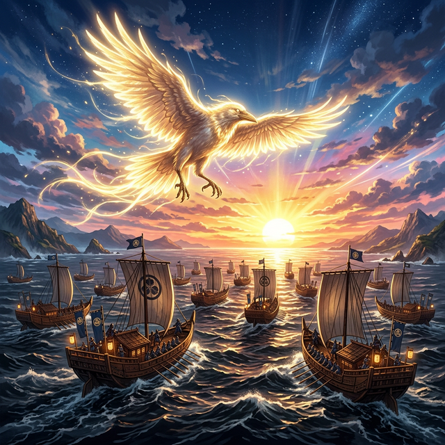

カムヤマトイワレビコは──空を見上げた。
決断する前に空を見上げる癖がある。無意識に太陽を探す。祖母の祖母の祖母──アマテラスの光を、見えるはずのない距離で求めている。
日向の空は広い。海と空の境界が曖昧で、水平線のあたりで青と青が溶け合い、どこからが天でどこからが海なのか分からなくなる。イワレビコは子供の頃から、この境界線をいつも見つめていた。
──あの向こうに、何がある。
母トヨタマビメは海の底に帰った。顔も知らない母。育ててくれたのは叔母のタマヨリビメだった。タマヨリビメは優しかったが、抱きしめる時の腕の力が──少しだけ弱かった。本当の母ではないことを──腕が知っていた。
アマテラスもまた母を知らない。禊の水から生まれた太陽の女神。大国主も──幼少期に母サシクニワカヒメに守られたが、二度殺されて蘇った後は一人で根の国に向かった。
母を知らない子の系譜──それがこの物語の、もう一つの背骨だった。
「──東に、美しい国がある」
兄イツセが言った。
イツセは長兄だった。四兄弟の中で最も背が高く、最も声が大きく、最も笑う男だった。肩幅が広く、腕は丸太のように太く、しかし手先は意外に器用で──弟たちの弓の弦を、いつも自分で張り替えてやっていた。
戦の腕は弟より上だったが、それを自慢しない。弟たちの前では常に穏やかで、冗談を言い、肩を叩き、「お前ならできる」と根拠のない励ましを惜しまなかった。
「──ここ日向は西に偏りすぎている。天下を治めるには──中心がいる。東に行こう」
イワレビコは──兄の目を見た。迷いがなかった。朝日を見る時のイツセの目は──いつもそうだった。陽の光を正面から見つめても、眩しがらない。太陽の血が──兄の目には確かに流れていた。
しかし──自分の中には、迷いがあった。
東とは何だ。見たことのない土地。聞いたことのない民。そして──抵抗するであろう国つ神たち。大国主が血と汗で築いた国を、天から降りた末裔が「治める」と宣言する──その行為の重さが、イワレビコには分かっていた。
「──兄上。俺は──」
「──できる」
イツセは弟の肩を叩いた。大きな手だった。決断するより先に体が動く男の、揺るぎない手。
「お前はできる。俺がそう決めた」
「──根拠は」
「ない。でも──親父の親父の親父のアマテラスが、お前の血の中にいるだろう。太陽の血だ。東に昇る血だ」
イワレビコは──笑った。兄のこういう無茶苦茶な論理が、好きだった。根拠がないくせに──聞いていると本当にできる気がしてくる。それがイツセの不思議な力だった。
次兄イナヒ、三兄ミケヌも加わった。イナヒは寡黙だが芯が強く、ミケヌは明るく社交的で同盟者を作るのが上手かった。四兄弟はそれぞれ違う持ち味を持っていたが──いつもイツセの背中を追って歩いていた。
「──みんな行くのか」
「当たり前だろう」イツセが笑った。「弟を一人で行かせるわけないだろうが」
美々津の港に船団が組まれた。一族郎党、兵を率いて。船の帆に──陽の光が当たり、白い布が金色に輝いた。
出航の朝──風が凪いでいた。海面は鏡のように静かで、空の青と海の青が一枚の布のように繋がっていた。浜辺では見送りの民が集まり──中にはタマヨリビメの姿もあった。
叔母は──泣かなかった。ただ──手を振った。小さく。しかし──ずっと。船が水平線の向こうに消えるまで──ずっと。
イワレビコは船の舳先に立ち──もう一度、空を見上げた。
太陽は──東にあった。
ここから始まる旅が十六年に及ぶことを──この時のイワレビコは、まだ知らない。兄を失うことも。熊野の闇に飲まれることも。八咫烏に導かれることも。大和の土を踏み──最初の王になることも。
何も知らないまま──東を向いた。
「──行こう」
*次回、第42話「十六年の航海」*
*イワレビコの船団は豊国に漂着し、筑紫に、安芸に、吉備に──十六年の歳月を経て、大和に迫る。*
*しかしそこに待ち受けるのは──ナガスネヒコの矢。そして兄の血だった。*
